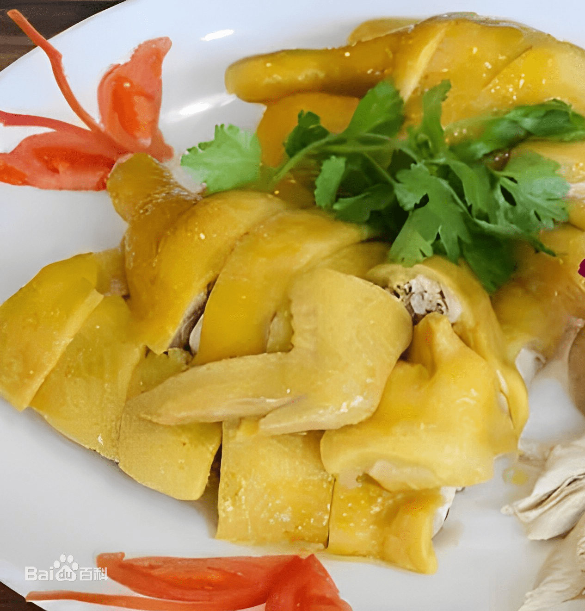
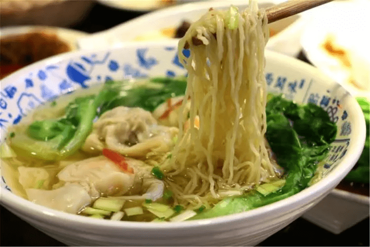
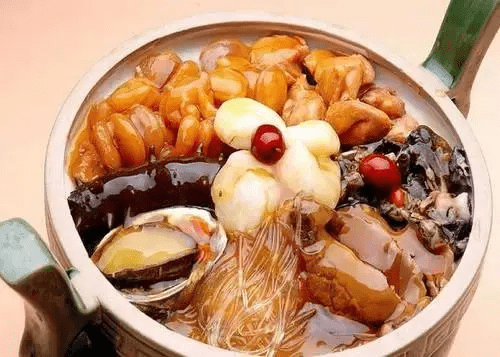
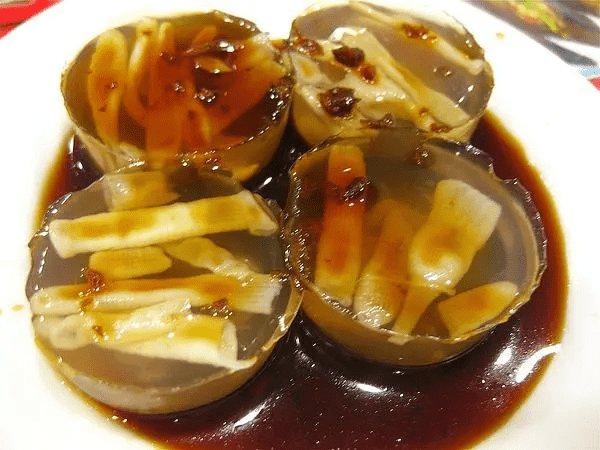
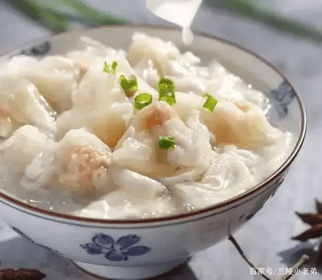

广府美食
“白斩鸡又叫白切鸡，是一道中华民族特色菜肴，是一道经典的粤菜，
始于清代的民间酒店，因烹鸡时不加调味白煮而成，
食用时随吃随斩，故称“白斩鸡”。白斩鸡形状美观，皮黄肉白，肥嫩鲜美，滋味异常鲜美，十分可口，
肉色洁白皮带黄油，具有葱油香味，葱段打花镶边，食时佐以姜蓉、蒜泥、酱油，保持了鸡肉的鲜美、原汁原味，
食之别有风味。

广式肠粉，是源于广州西关的传统小吃。早在清代末期，广州街头上就已经听到卖肠粉的叫卖声。
那时候，肠粉分咸、甜两种，
咸肠粉的馅料主要有猪肉、牛肉、虾仁、猪肝等。而甜肠粉的馅料则主要是糖浸的蔬果，再拌上炒香芝麻。
“云吞面（Wonton Noodle）又称馄饨面、细蓉、大蓉，是广东省的汉族特色小吃，
属于粤菜系。一般以云吞拌面，分为汤面与捞面。云吞面是一种在中国十分普遍的食品。
以煮熟的馄饨和蛋面，加入热汤即成。云吞面也是香港饮食文化中不可或缺的一部份。 云吞就是馄饨，
最早云吞以全猪肉制，所以称做“净肉云吞”。古代云吞很讲究，要肥三瘦七，弄成肉糜，正宗的且先切后剁。

双皮奶，是一种粤式甜品。清朝时起源自广东顺德，用水牛奶做原料。现遍布于广东、澳门、香港等地。
历史源流据说顺德双皮奶始创于清朝末期，是顺德当地一位农民在清晨烹制早餐的时候，不小心在水牛奶里翻了个花样，
无意中调出民间美食“双皮奶”，并流传至今。
福建美食
佛跳墙又名福寿全，是福建省福州市的一道特色名菜，属闽菜系。相传，
佛跳墙通常选用鲍鱼、海参、鱼唇、牦牛皮胶、杏鲍菇、蹄筋、花菇、墨鱼、瑶柱、鹌鹑蛋等汇聚到一起，
加入高汤和福建老酒，文火煨制而成。
成菜后，软嫩柔润，浓郁荤香，又荤而不腻，味中有味。

蚵仔煎,关于它的起源，有一则有趣的故事。民间传闻，公元1661年时，
荷兰军队占领台南，泉州南安人郑成功从鹿耳门率兵攻入，意欲收复失土，郑军势如破竹大败荷军，
荷军在一怒之下，把米粮全都藏匿起来，郑军在缺粮之馀急中生智，
索性就地取材将台湾特产蚵仔、番薯粉混合加水和一和煎成饼吃，想不到竟流传后世，成了风靡全省的小吃。
“闽南土笋冻”是一道很有特色的小食，其实此“笋”非彼“笋”，土笋是生长在海滩泥沙中的一种软体小动物——海沙虫
，因形似“小笋”而得名，它体内含有丰富的胶质，经过熬煮后所含的胶质融入水中，冷却后即成果冻状，口感清脆， 味美甘甜，
如果佐以萝卜酸、芥辣酱或是闽南特制鲜味汁，吃起来更加鲜嫩爽口，感觉如吃果冻般过瘾。

沙县扁肉是由馄饨演变而来的，是福建省三明市沙县的一种传统地方名点，属于闽菜系。
各地对馄饨的叫法不尽相同，比如：四川称“抄手”，广东称“云吞”，武汉称“包面”，江西称“清汤”，
江苏称“淮饺”，新疆称“曲曲”等等。南北扁肉有很多，而大多数食客都觉得沙县小吃很有名，
在沙县琳琅满目的美食中，扁肉是最有人气的小吃，它早在1997年就获得了“中华名小吃”称号。
